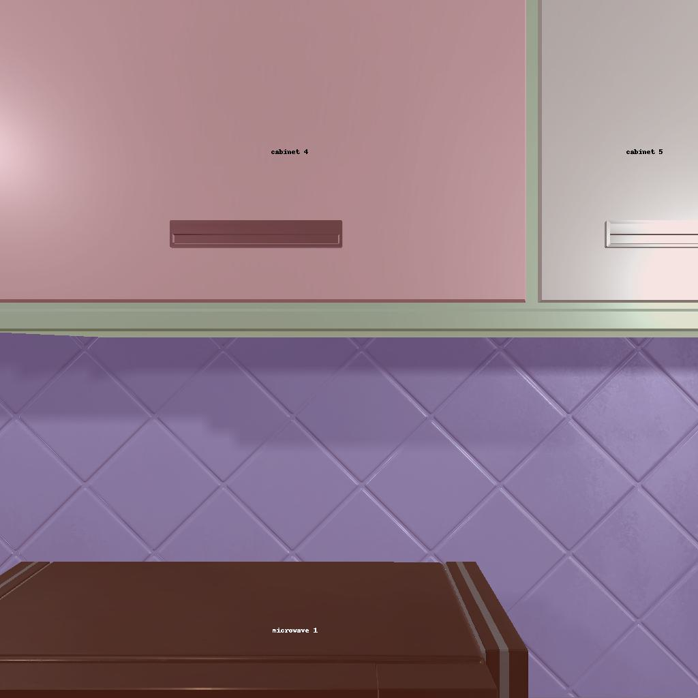

---------------------------------------------------------task: 12---------------------------------------------------------
--------------------------------------------------------------------------------------------------------------------------------------------------------------------
--------------------------------------------------------------------------------------------------------------------------------------------------------------------
Step:--------------------------------------------------------------------------8-------------------------------------------------------------------------------
----------------------------------------
VLM Prompt:
Image1:
Image2:
Image3:
**Instruction**
1. Analyze the provided image to identify all visible household objects, focusing on those relevant to the task description "put a clean tomato in countertop."
2. Use the analysis of the image and the task hint "The agent must find an object of the desired type, pick it up, go to a sink or a basin, clean the object with a sink or basin, and then find the correct location to place it and put it down there. The agent does not need to use soap bottle or faucet to clean the object, and the agent just needs to do action that is "clean the object with the sink or sink basin"." to answer the question: what is the most reasonable action in the choices for the task description "put a clean tomato in countertop"?
4. Decide and write the answer using the template: The answer is: (i): , where i is the real number. If there is no desired object in the image, search every place based on **Initial Observation** to find the object. And if no one is exactly correct, choose a similar answer.
**Initial Observation**
You are in the middle of a room. Looking quickly around you, you can see cabinet (1-6), microwave (1), countertop (1-2), coffeemachine (1), toaster (1), sink (1), sinkbasin (1), fridge (1)
**Answer Choices**
(1): go to cabinet 1
(2): go to cabinet 2
(3): go to microwave 1
(4): go to cabinet 5
(5): go to cabinet 6
(6): go to countertop 1
(7): go to coffeemachine 1
(8): go to toaster 1
(9): go to countertop 2
(10): go to sink 1
(11): go to sinkbasin 1
(12): open cabinet 4
(13): close cabinet 4
(14): examine cabinet 4
**Answer**
Let's think step by step by following the instructions.
----------------------------------------
----------------------------------------
Original Response:
First, we need to find a tomato. According to the initial observation, there is no mention of a tomato being visible in the current view. Therefore, we must search for the tomato in cabinets or the fridge.
Image 1 shows cabinet 1, 2, and 3 but no visible tomato.
Image 2 shows the inside of the fridge with no tomato; only a potato and apple are visible.
Image 3 shows cabinet 4 and 5 closed, and therefore we cannot determine if there is a tomato inside without opening them.
Given the choices, the most reasonable action to find a clean tomato would be to search the cabinets that we haven't seen inside yet. The best option is to open cabinet 4 or 5, as they are the only cabinets we have not looked inside. Since there is no action to open cabinet 5, the most reasonable action is:
The answer is: (12): open cabinet 4.
----------------------------------------
----------------------------------------
>>> Refine Original VLM Response and Get Pure Action: open cabinet 4
----------------------------------------
-----------------------------------------------------------------
Running time: 9.968490362167358 seconds
Total Money: 7.23585
-----------------------------------------------------------------
-----------------------------------------------------------------
Text Observation:You open the cabinet 4. The cabinet 4 is open. In it, you see nothing.
-----------------------------------------------------------------
UNSUCCEED